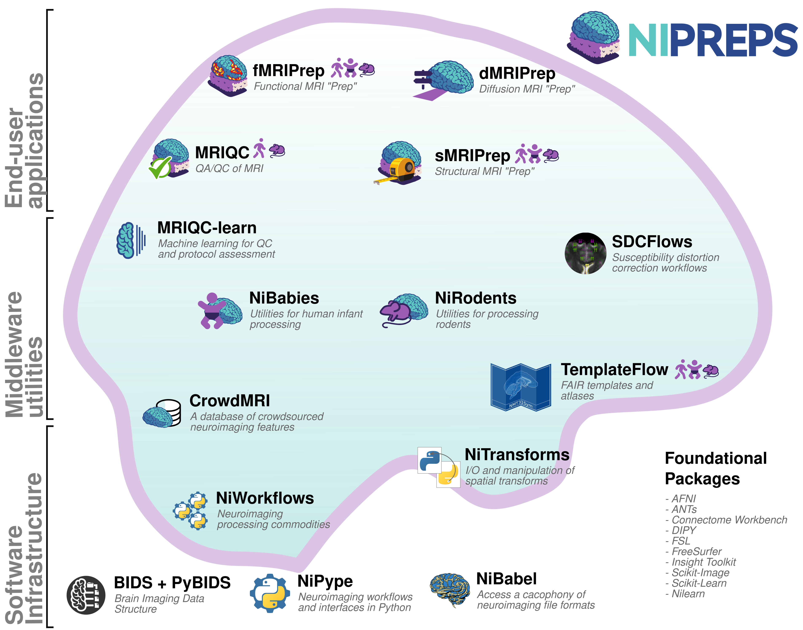

NeuroImaging PREProcessing toolS (NiPreps) ¶
NiPreps augment the scanner to produce data directly consumable by analyses .
We refer to data directly consumable by analyses as analysis-grade data by analogy with the concept of " sushi-grade (or sashimi-grade ) fish " in that both are products that have been:
- minimally preprocessed , but are
- safe to consume directly.
